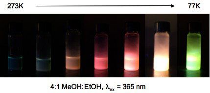

Difluoroboron Dibenzoylmethane-Polylactide is Multi-emissive Polymeric boron complexes are prepared using hydroxyl functionalized boron initiators in ring opening polymerization (ROP) reactions. For example, ROP of lactide with BF2dbmOH (dbm = dibenzoylmethane) results in BF2dbmPLA, a boron biomaterial with impressive and unexpected optical properties.
BF2dbmPLA is a multi-emissive material. In addition to intense blue fluorescence, unusual room temperature phosphorescence (RTP) and also temperature-sensitive delayed fluorescence (DF) are observed. BF2dbm and related β-diketonate derivatives are classic dyes noted for their strong absorbance, high quantum yield fluorescence, and even 2-photon absorption. Room temperature phosphorescence, however, is something new and largely unknown for boron diketonate complexes and related BODIPY dyes that are commonly used 1- and 2-photon dyes in biology. It is only when BF2dbm is blended or covalently attached to PLA (and perhaps other solid matrices) that green RTP is observed. Though fluorescence lifetimes are very short, on the order of nanoseconds, RTP lifetimes for BF2dbmPLA approach seconds in duration. Consequently, the green phosphorescence is highly sensitive to oxygen quenching, and these materials serve as highly sensitive optical oxygen sensors. That is, both blue fluorescence and a green phosphorescent “afterglow” are present in anaerobic or hypoxic environments, but when the sample is exposed to air, only fluorescence is observed. Chemical modification of the ligand allows for oxygen sensitivity tuning. This bodes well for ratiometric sensing. Delayed fluorescence, on the other hand, is believed to arise from thermal back population of the singlet state. This process is inhibited at low temperature. “Multi-Emissive Difluoroboron Dibenzoylmethane Polylactide Exhibiting Intense Fluorescence and Oxygen Sensitive Room Temperature Phosphorescence” Zhang, G.; Chen, J.; Payne, S. J.; Kooi, S. E.; Demas, J. N.; Fraser, C. L. J. Am. Chem. Soc. 2007,129, 8942-3. “Multi-Emissive Difluoroboron Dibenzoylmethane Polylactide: Synthesis and Optical Properties” Zhang, G.; Chen, J.; Payne, S. J.; Kooi, S. E.; Demas, J. N.; Fraser, C. L. Polym. Prepr. (Am. Chem. Soc., Div. Polym. Chem.) 2008, 49(1), 258-9. “Light Emitting Boron Biomaterials” Fraser, C. L.; Zhang, G.; Payne, S. J.; Demas, J. N.; Pfister, A.; Kooi, S. E.; Chen, Y. J.; St. Clair, T. L.; Lee, Y.-J. Polym. Mater. Sci. Eng. 2008, 98, 24. Zhang, G.; Sabat, M.; Fraser, C. L. “Light Emitting Difluoroboron Dibenzoylmethane Polylactide” In preparation.
Optical Properties Persist for Boron Nanoparticles in Aqueous Boron biomaterials possess many properties that can be useful for biological imaging and oxygen sensing. In addition to intense and tunable emission, they are 2-photon absorbers and PLA is readily processable, biocompatible and biodegradable material commonly used in medicine and sustainable design. To test the potential of these materials for biological applications, it was first important to verify that the materials can be fashioned into a form that can be readily administered to biological systems and that the optical properties persist in aqueous environments. BF2dbmPLA nanoparticles <100 nm in size were fabricated by nanoprecipitation. Intense fluorescence and phosphorescence remain at room and body temperature (37 C) and emission color is tunable with polymer molecular weight. These materials can be excited in the UV (~370 nm) or near IR (790 nm) by 1- and 2-photon absorption respectively. Longer wavelength excitation (790 nm) in multiphoton microscopy is less damaging to cells and tissues than UV light. See boron biology for highlights of cell, tissue and in vivo studies. “Boron Polylactide Nanoparticles Exhibiting Fluorescence and Phosphorescence in Aqueous Medium” Pfister, A.; Zhang, G.; Zareno, J.; Horwitz, A. F.; Fraser, C. L. ACS Nano 2008, 2, 1252-8. “Nanoparticles ‘Glow Crazy’ for Bioapplications” In Nano Highlight, ACS Nano 2008, 2, 1088. ACS Nano Podcast, Episode 11, June 2008. “Boron Polylactide Nanoparticles: Molecular Weight Color Tuning and Cellular Uptake” Xie, J.; Chen, Y. J.; Zhang, G.; Hamm-Alvarez, S.; Fraser, C. L. In preparation.
Emission Color Tuning: Ligands The classic way of tuning emission color for boron difluoride β-diketonate complexes is to modify the ligand. Extended conjugation can result in red shifted emission and electron donating groups lead to increased quantum yields. Building upon work by Chow, and Allemand and Jullien, we made a series of new ligand derivatives that lead to fluorescent boron dyes that cross the entire visible spectrum. As previously reported by Mirochnik et al, many boron complexes also display fascinating optical effects in the solid state that depend upon processing conditions and the crystalline form. This work was motivated in part, by the need for red shifted systems with greater tissue penetration and reduced damage to cells and tissues for biomedical optical imaging. Presently we are adapting promising model systems for incorporation into polymers. “Emission Color Tuning of β-Diketonate Ligands and their Difluoroboron Complexes” Zhang, G.; Lee, Y. J.; Evans, R. E.; Fraser, C. L. In preparation.
Emission Color Tuning: Polymer Molecular Weight Recently we discovered a new method of emission color tuning based on polymer molecular weight (MW). In the course of kinetics experiments for BF2dbmPLA, it was noted that the fluorescence shifted from green to blue as the MW increased. This is a solid-state effect. It is not evident in BF2dbmPLA samples in solution, where emission maxima, lifetimes, and quantum yields are the same or similar. Presently we believe this to be a dye concentration effect. Boron difluoride β-diketonate dyes possess large dipole moments and display excited state solvatochromism with red shifted emission in more polar environments. Though the solid state solvent remains PLA throughout in BF2dbmPLA samples of varying MWs, the polar dye to PLA ratio, the overall polarity of the medium, and excited state stabilization decrease with increasing polymer MW. Corresponding delayed fluorescence shifts similarly with MW, indicating that this phenomenon is intrinsic to the material, not simply based on processing or aspects of the surroundings, for instance. Emission color tuning is possible for BF2dbmPLA when fabricated as nanoparticles in aqueous suspension too. Emission colors range from 429-504 nm depending on the polymer MW and can be detected and distinguished in cells. “Emission Color Tuning with Polymer Molecular Weight for Boron Dibenzoylmethane-Polylactide” Zhang, G.; Kooi, S. E.; Demas, J. N.; Fraser, C. L. Adv. Mater. 2008, 20, 2099-104. “Emission Color Tuning in Boron Biomaterials” Fraser, C. L.; Zhang, G.; Demas, J. N.; Kooi, S. E.; Chen, Y. J.; Pfister, A.; Lee, Y.-J. Polym. Prepr. (Am. Chem. Soc., Div. Polym. Chem.) 2008, 49(1), POLY-396.
Emission Color Tuning: Polymer Composition Is PLA unique or are these special optical properties also present when difluoroboron diketonate dyes are combined with other polymers too? This is a question that we are presently exploring by screening many different polymers. Curiously, RTP is barely evident in BF2dbmPCL (PCL = ε-polycaprolactone), another common degradable polyester used in medicine, but RTP is rescued when short PLA blocks are added to BF2dbmPCL chains, producing BF2dbmPCL-PLA block copolymers. Does the polymer have to be covalently attached or are similar properties present for blends? In fact, boron dye/PLA blends exhibit similar effects, though phase separation and ground state dye-dye interactions are noted at higher dye loadings. We continue to explore polymer property effects on boron dye luminescence. Both chemical and physical properties of the polymer may be important. “Polymer Effects on Boron Light Emitting Biomaterials Properties” Kim, S. H.; St. Clair, T. L.; Zhang, G.; Kim, B. H.; Fraser, C. L. In preparation.
Oxygen Sensitivity Tuning It is also possible to tune the oxygen sensitivity of the boron biomaterials and modulate the ratio of fluorescence to phosphorescence intensities too. This is important for ratiometric sensing and even “turn on” sensors are possible! For a preview of this exciting new discovery see the image below. The RTP lights up under a stream of nitrogen. Next generation materials are well matched for hypoxia sensing. “Dual Channel Fluorescence-Room Temperature Phosphorescence Oxygen Sensor” Zhang, G.; Fraser, C. L. In preparation.
Boron Bis-Diketonate Complexes: Temperature and Moisture Effects Boron compounds with two β-diketonate ligands also exhibit interesting properties and potential for sensing applications. When [B(dbmOR)2]X derivatives are dissolve in good glass-forming solvent mixtures and cooled from room to liquid nitrogen temperatures, impressive color changes are observed.  “Multicolored Temperature Dependent Luminescence for Boron Bis(Dibenzoylmethane) Salts” Zhang, G.; Demas, J. N.; Fraser, C. L. Abs. Pap. ACS Vol 235 (Apr)-Inorg (2008).
When adsorbed onto solid supports, certain boron bis bdk complexes display impressive sensitivity to moisture and humidity, responding reversibly with readily detectable color changes. We continue to explore these intriguing responsive phenomena. |

- Contact
- University of Virginia
- Chemistry
- Last modified:
- Copyright ©